|
Roda JC - FC Girondins de Bordeaux (2-0) 4 dec. 2001 |
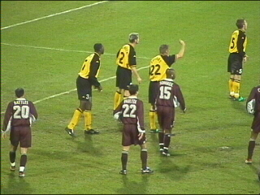
De solide defensie van Roda wacht een vrije trap
van de Fransen af. Links in beeld Batlles die later
rood zal krijgen vanwege hands in het doelgebied.
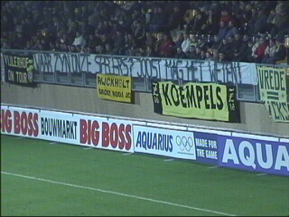
Er hing een subtiele mededeling op zuid.
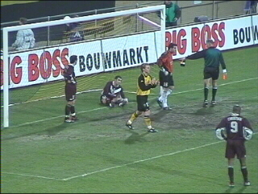
Na een hoge kopbal van Anastasiou slaat Batlles
in een reflex de bal weg. De Oostenrijkse
scheidsrechter geeft hem rood en kent Roda een
strafschop toe.
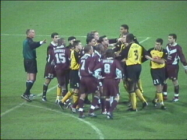
Dat leidt tot enig trek- en duwwerk.
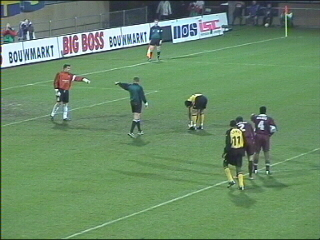
De bekende rituelen van protesteren en treiteren.
Anastasiou legt de bal ondertussen op de stip.
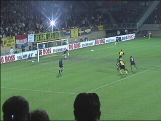
Zijn schot wordt door Ramé weggestompt.
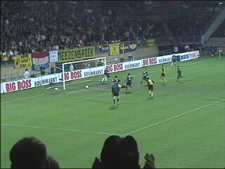
Maar in de rebound kan Anastasiou met een
snoekduik alsnog inkoppen (56e min.).
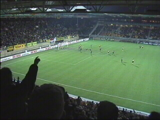
In de 64e min. maakt Lawal een omhaal die door
de Franse keeper hoog wordt gestopt. Op dat
moment OF op het moment dat hij met de bal op
de grond valt is de bal over de lijn volgens de
grensrechter. De meeste beelden leken uit te
wijzen dat dit niet zo was. Echter JOOL = JOOL.
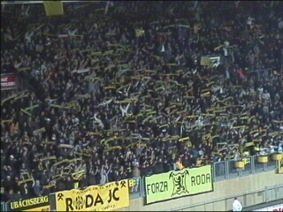
Het stadion explodeert van vreugde.
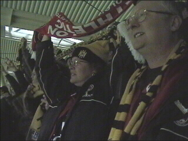
Ook de gasten van Charlton Athletic vierenfeest.
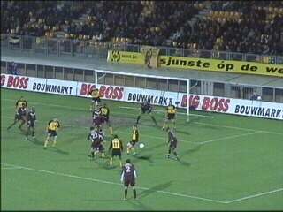
Ondanks de man-meer situatie slaat de angst
voor een tegentreffer toe. Roda verliest de
controle en de Fransen zetten sterk aan.
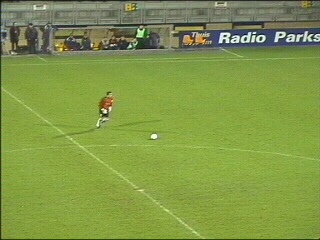
Zelfs de Franse keeper rukt mee naar voren.
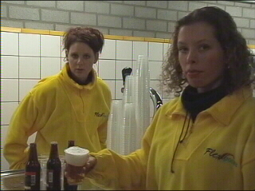
Als er 5(!) minuten blessuretijd worden bijgeteld
rukt uw verslaggever het niet meer en mag als
primeur het eerst getapte kermisbiertje van de
avond in ontvangst nemen van deze lieverds.
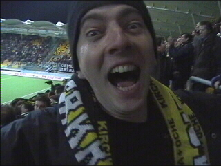
Na de martelende eindfase is er dan de ontlading.
Hier geïllustreerd door Beavke. Mensen juichen,
dansen, knuffelen. BOMBENSTIMMUNG en een
historische prestatie!!
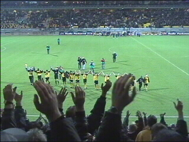
Complimenten voor Roda en haar publiek.
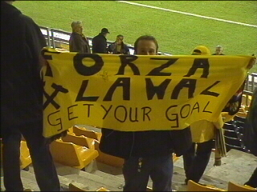
Goldy toont trots zijn spandoek van Lawalhalla.
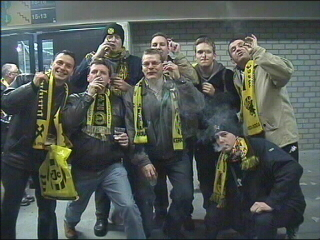
Nog nooit werden er zoveel sigaren gerookt als
vandaag...
©KPD